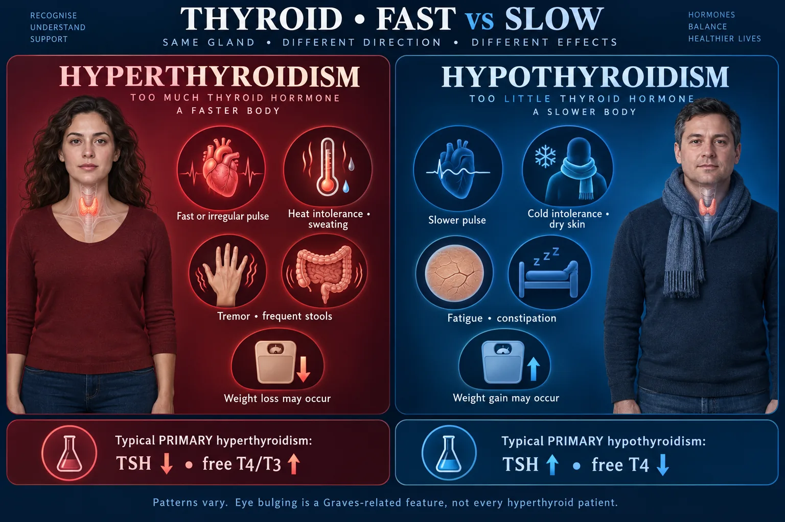

Hyperthyroidism 🔥
Graves’ = GAINS “HIGH” — every system in the body on fast-forward
Thyroid hormone is the body’s metabolic accelerator. Too much of it and everything runs hot and fast: heart rate up, temperature up, bowels up, weight down. Learn this page as the mirror image of NG-285 (Hypothyroidism) — same sections, same diagrams, opposite findings — and the two stop blurring together. The one number that catches students out: in primary disease TSH goes the OPPOSITE way to T3/T4, so hyperthyroidism has a LOW TSH.
THE GLAND & WHY IT SPEEDS UP
STEP 1 · CAUSEA butterfly-shaped gland sitting on the windpipe that sets the speed of every cell in the body.

Thyroid follicles make thyroid hormone; separate parathyroids regulate calcium.
🔍 Open full-size illustration📖 Read the illustration as text
The thyroid has two lobes and an isthmus anterior to the trachea. Usually four parathyroids lie on its posterior surface. Follicular cells produce T3/T4 with storage in colloid. C cells produce calcitonin; its everyday calcium-regulating role in adults is smaller than that of PTH and vitamin D.
🦋 Anatomy first — normal gland vs goitre
🖼️ Shown in the picture: Thyroid and parathyroid anatomy ↑
Two lobes joined by an isthmus, wrapped round the trachea just below the cricoid cartilage. It is the most superficial endocrine gland in the body — which is why you can see and feel disease here that you would never detect in an adrenal or a pituitary.
⚙️ What T3 and T4 actually do
They set the basal metabolic rate — how fast every cell burns fuel.
- Heat production (body temperature)
- Heart rate, contractility and cardiac output
- Gut motility
- Growth and brain development in children
- How fast other drugs and hormones are used up
T4 is the storage form the gland mostly releases; T3 is the active form tissues convert it into.
🧬 Iodine is the raw material
The gland traps dietary iodine and bolts it onto tyrosine to build hormone. T4 carries four iodines, T3 carries three.
That is why too much iodine — contrast dye, amiodarone, kelp/seaweed supplements — can tip a susceptible gland into overproduction.
⭐ Cause #1 — Graves’ disease
Autoimmune. The body makes an antibody (thyroid-stimulating immunoglobulin) that imitates TSH and jams the TSH receptor permanently ON.
Because it is an antibody disease and not just excess hormone, Graves’ brings extras that other causes do not: exophthalmos, goitre, and thickened shiny skin over the shins (pretibial myxedema).
Most common in women, typically 20–40 years old.
📋 The other causes — in order of exam frequency
- Toxic multinodular goitre / toxic adenoma — autonomous nodules that ignore TSH. Older adults.
- Thyroiditis — an inflamed gland leaks stored hormone. Often transient, and it can be followed by a hypothyroid phase.
- Too much iodine — contrast, amiodarone, kelp.
- Too much levothyroxine — over-replacement or misuse for weight loss. Iatrogenic and common.
- Rarely, a TSH-secreting pituitary tumor (then TSH is HIGH — see the labs section).
🔬 Down at the microscope — the follicle
🖼️ Shown in the picture: Thyroid and parathyroid anatomy ↑
Thyroid tissue is a field of follicles: a ring of cells around a pool of colloid, which is stored hormone. In overdrive the cells grow tall and eat the colloid away — the gland is spending its savings.
🎈 Goitre — an enlarged gland, not a diagnosis
A goitre just means the gland is big. It happens in hyperthyroidism, in hypothyroidism, and in iodine deficiency — so it never tells you the direction on its own.
Never palpate the neck vigorously in known or suspected hyperthyroidism — hard palpation can squeeze stored hormone into the circulation and help trigger a thyroid storm.
HIGH & HOT — THE SIGNS
STEP 2 · CLUESOne rule generates every symptom: metabolism is running too fast. Predict, don’t memorize.

Compare symptoms with TSH and free hormone tests.
🔍 Open full-size illustration📖 Read the illustration as text
Hyperthyroidism can cause rapid or irregular pulse, heat intolerance, tremor, frequent stools and weight loss. Hypothyroidism can cause fatigue, cold intolerance, dry skin, constipation and weight gain. Primary disease usually gives opposite TSH/free T4 directions. Findings vary; Graves-related eye disease is not universal.
🧍 Head to toe — hyper on the left, hypo on the right
🖼️ Shown in the picture: Thyroid: fast versus slow ↑
❤️ Cardiac — the system that kills
- Tachycardia >100 at rest (normal 60–100)
- Palpitations and atrial fibrillation — the classic complication in older patients
- Systolic hypertension with a widened pulse pressure (e.g. 160/60)
- Bounding pulse, warm flushed skin, exercise intolerance
- Eventually high-output heart failure and angina
Cardiac status is the priority assessment at every shift.
🌡️ Heat — hot and WET, not hot and dry
Low-grade fever, heat intolerance, and skin that is warm, moist and diaphoretic.
Patients strip off layers, open windows in winter, and sleep with a fan.
Hot + DRY skin is dehydration or heat stroke — hyperthyroid skin is hot and SWEATY.
🍽️ Weight & gut — eating more, weighing less
- Weight loss despite an increased appetite — the single most classic line
- Diarrhea / frequent stools · hyperactive bowel sounds
- Muscle wasting, especially the proximal muscles (rising from a chair, combing hair)
Diet: high calorie, high protein, high carbohydrate, with snacks between meals. Some sources cite 4,000–5,000 kcal/day in severe untreated disease. Keep fiber low because the gut is already too fast, and avoid caffeine and other stimulants.
🧠 Neuro & psych — the earliest change
- Anxiety, irritability, emotional lability, insomnia
- Fine tremor of the outstretched hands
- Hyperreflexia — brisk deep tendon reflexes
- Restlessness with genuine fatigue underneath it
New agitation or confusion in a hyperthyroid patient is an early thyroid storm until proven otherwise.
👁️ Exophthalmos — a Graves’ problem, not a hormone problem
👁️ Graves-related eye disease
Mechanism
- Autoimmune inflammation and tissue expansion in the orbit can cause proptosis, irritation or double vision.
Nursing focus
- Protect the ocular surface as prescribed; report reduced vision, color change or significant pain urgently. Eye disease is not present in every hyperthyroid patient.
👩 Reproductive & skin
- Amenorrhea or light, infrequent periods (hypothyroid does the opposite — heavy periods)
- Reduced fertility; in men, gynaecomastia and reduced libido
- Fine, soft, thinning hair; smooth velvety skin; brittle nails
- Rare but classic in Graves’: thickened, shiny, orange-peel skin over the shins (pretibial myxedema)
📊 Side by side — the mirror table
| Body system | HYPERthyroid 🔥 | HYPOthyroid 🧊 |
|---|---|---|
| Heart rate | Tachycardia, A-fib, palpitations | Bradycardia, low voltage ECG |
| Blood pressure | Systolic HTN, wide pulse pressure | Diastolic HTN, narrow pulse pressure |
| Temperature | Heat intolerance, warm MOIST skin | Cold intolerance, cool DRY skin |
| Weight | LOSS with increased appetite | GAIN with reduced appetite |
| Bowels | Diarrhea | Constipation |
| Mood / cognition | Anxious, irritable, insomnia | Depressed, apathetic, forgetful |
| Reflexes | Brisk / hyperreflexia | Slow relaxation phase |
| Periods | Light or absent (amenorrhea) | Heavy / irregular (menorrhagia) |
| Hair & skin | Fine thinning hair, smooth skin | Coarse hair, hair loss, dry scaly skin |
| Eyes | Exophthalmos, lid lag (Graves’) | Puffy periorbital edema, lost outer brow |
| Emergency | THYROID STORM | MYXEDEMA COMA |
READING THE LABS
STEP 3 · CONFIRMThis is the same logic on NG-285 — learn it once and it answers both pages.
🧪 The three patterns you must recognize
🧪 Read TSH WITH free T4
Primary hyperthyroidism
- TSH usually low; free T4 and/or T3 high.
Primary hypothyroidism
- TSH usually high; free T4 low.
Central hypothyroidism
- Free T4 low with inappropriately low, normal or sometimes mildly high TSH.
Subclinical patterns
- TSH abnormal while free thyroid hormones remain within range; interpretation depends on context.
🔁 The loop — why TSH moves backwards
♻️ Thyroid feedback pathway
- Hypothalamus: TRH
- Anterior pituitary: TSH
- Thyroid: T4 and T3
- Thyroid hormone feeds back to reduce upstream stimulation.
Primary gland failure usually produces low free T4 with high TSH. Central hypothyroidism can have low free T4 with an inappropriately low, normal or occasionally mildly raised TSH.
🧪 TSH is the screening test
TSH is the most sensitive single test of thyroid function, because the pituitary reacts to tiny changes in circulating hormone long before the patient notices anything.
In primary hyperthyroidism, TSH is suppressed — low or undetectable.
Reference ranges vary between labs and shift in pregnancy and older age — always read the range printed beside the result rather than memorizing a number.
🧪 Free T4 and T3 confirm it
Once TSH is abnormal, free T4 (and often T3) tells you the size and the direction of the problem.
- TSH low + free T4 high = overt hyperthyroidism
- TSH low + free T4 normal = subclinical hyperthyroidism (still raises A-fib and osteoporosis risk)
- A small group are “T3 toxic” — T3 high with a normal T4
🔬 Tests that name the cause
- Thyroid antibodies (TSH-receptor / thyroid-stimulating immunoglobulin) → Graves’ disease
- Radioactive iodine uptake scan (RAIU) — a hot, diffusely active gland = Graves’; hot nodules with a cold background = toxic nodular disease; a cold, low-uptake gland = thyroiditis or an iodine load
- Ultrasound for nodules and gland size
⚠️ The classic exam traps
- Choosing “TSH high” for hyperthyroidism because both start with the same idea of “high”. In primary disease it is LOW.
- Forgetting secondary/central disease: if TSH and T3/T4 point the same way, the pituitary is the problem, not the gland.
- Other results you may see: low cholesterol, high blood glucose, high calcium, and a low hematocrit.
THYROID STORM
STEP 4 · EMERGENCYThyrotoxic crisis. Rare, and lethal if you wait for it to declare itself.
🚨 The whole picture in one diagram
🚑 Thyroid storm: recognize systemic decompensation
- Fever, marked tachycardia and new agitation, delirium or reduced consciousness.
- Escalate urgently; support airway/circulation, cooling and monitoring.
- Give ordered antithyroid therapy, carefully selected adrenergic control and glucocorticoids.
- Iodine, when used, follows thionamide treatment according to the protocol.
Treat the trigger. This is a clinical emergency; no single thyroid-hormone number establishes it. Beta-blockade requires particular caution in shock or decompensated heart failure.
🚨 Recognize it early — mental status first
The vitals get all the attention, but the first thing that changes is the brain.
Report a change in level of consciousness immediately — do not wait for the temperature.
❌ The never-do list
- Never give aspirin or other salicylates — they push thyroid hormone off its binding protein and raise the free hormone level.
- Never palpate the goitre firmly.
- Never let a hyperthyroid patient simply stop their antithyroid drug on their own. The exception to report at once: fever or a sore throat on methimazole or PTU — it needs an urgent blood count (agranulocytosis), and the provider may hold the drug.
- Never leave them in a warm, bright, noisy room.
✅ Nursing priorities in a storm
continuous cardiac monitoring, oxygen, IV access
cooling blanket, tepid sponging, non-salicylate antipyretic per order
they are losing volume through sweat, vomiting and diarrhea
cluster care, limit visitors, no stimulants
usually infection — cultures and antibiotics as ordered
💊 The drug order matters
The expected sequence in a storm is:
- Antithyroid drug first (PTU or methimazole) — stops new hormone being made
- Iodine at least an hour later — given too early it becomes raw material for more hormone
- Beta-blocker — controls heart rate, tremor and anxiety
- Glucocorticoid — supports the stressed adrenal and reduces T4→T3 conversion
Doses and choices vary by protocol — follow the order and your facility policy.
TREAT & TEACH
STEP 5 · CAREThree routes: slow the gland with drugs, destroy it with iodine, or remove it with surgery.
🏥 After thyroid surgery: four checks
🫁 Airway
- New stridor, respiratory distress or rapidly expanding neck swelling requires immediate response.
🩸 Bleeding
- Inspect the wound/neck and monitor hemodynamics.
🗣️ Voice
- New or persistent voice change needs assessment.
🦴 Calcium
- Watch for tingling, cramps or tetany; assess prescribed calcium/PTH labs.
💊 Antithyroid drugs — methimazole & propylthiouracil
Both block hormone synthesis. They do not touch hormone already stored, so relief takes weeks, not days.
- Methimazole — usually first choice outside the first trimester of pregnancy
- Propylthiouracil (PTU) — preferred in the first trimester; also blocks T4→T3 conversion, which is why it appears in storm protocols. Carries a liver injury warning.
Report immediately: fever, sore throat, mouth ulcers — these can signal agranulocytosis, a dangerous drop in white cells.
Also report yellowing of the eyes or skin, dark urine, and right upper quadrant pain (liver).
💊 Beta-blockers — symptom rescue
Propranolol and other “-olol” drugs do nothing to the gland. They mask the sympathetic symptoms while the antithyroid drug works.
- Slows heart rate, softens tremor, calms anxiety
- Hold and check if HR is below 60 or the blood pressure is low — follow the parameters on the order
- Use with caution in asthma and in decompensated heart failure
💊 Iodine solutions (SSKI / Lugol’s)
Large doses of iodine temporarily shrink the gland and reduce its blood supply — used before surgery and in a storm.
- Dilute it in juice or water and give it through a straw — it stains teeth
- Give it after the antithyroid drug, separated by about an hour
- Take with food to reduce gastric upset
- Report a brassy taste, burning mouth or sore gums
☢️ Radioactive iodine (RAI) — the common definitive treatment
An oral dose the gland absorbs, which destroys overactive tissue over weeks. The patient is awake — this is not a surgical procedure.
Before: confirm a negative pregnancy test (it is absolutely contraindicated in pregnancy and breastfeeding), stop antithyroid drugs for a few days as directed, remove neck jewelry and dentures, and follow the fasting instructions given.
After — radiation precautions for several days per protocol:
- Avoid close prolonged contact, especially with pregnant people, infants and children
- Sleep alone; avoid crowds and public transport
- Use a separate toilet if possible, sit to void, and flush 2–3 times
- Do not share utensils, towels or laundry; wash them separately
- Increase fluids to clear the isotope faster
Expect hypothyroidism afterwards — most patients end up on lifelong levothyroxine, which is a planned outcome and not a complication.
🔪 After a thyroidectomy — the four checks
🖼️ Shown in the picture: After thyroid surgery: four checks ↑
Positioning: semi-Fowler’s, 30–45°, with the head and neck in neutral alignment. Support the head with both hands when turning. Do not let the patient flex or hyperextend the neck, and do not lie them flat.
Also expect: humidified air, encouragement to cough and deep breathe while supporting the neck, and a soft or liquid diet initially.
⚠️ Avoid the 5 S’s — they can trigger a storm
✅ Eye care teaching (Graves’)
- Artificial tears during the day; lubricating ointment at night
- Dark glasses outdoors — light sensitivity and wind irritation
- Elevate the head of the bed to drain periorbital fluid
- Restrict sodium to reduce swelling
- Tape the lids shut or wear an eye shield at night if they do not close
- Do full eye range-of-motion exercises to keep the muscles supple
- Stop smoking — it is the strongest modifiable risk factor for the eye disease
Never massage the eyeball.
🧠 Quiz yourself — no peeking
8 questions with answers
🆕 Newer guidance — side notes (your textbook answer stays the exam answer)
- Central (pituitary) hypothyroidism does not always show both arrows pointing the same way: free T4 is low and TSH can be low, normal or even mildly high, because the pituitary may release a less active TSH. Read TSH and free T4 together — the “same direction” rule is the textbook shortcut, not the whole story.
From Codex’s 7 Oct review, sources checked that day. For tests and NCLEX-style questions, answer the way your textbook teaches.